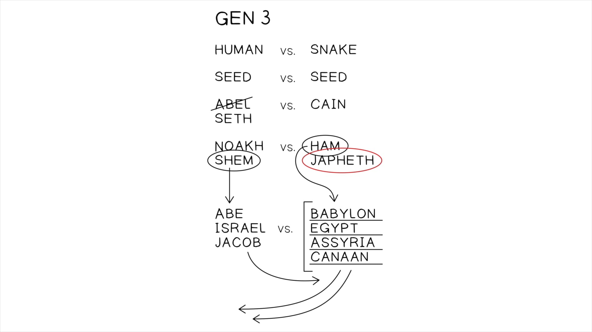

Em Ezequiel 38-39 dois grandes temas do início do livro são retomados:In Ezekiel 38-39 two great themes from earlier in the book are taken up.
Ezequiel 38-48 aborda esses temas em ordem reversa.Ezekiel 38-48 addresses these themes in reverse order.
Estes capítulos são um hiato entre a promessa de um futuro templo em Ezequiel 37:26-28 e a sua realização nos capítulos 40-48. O assunto é como Yahweh lidará com a ainda existente ameaça do mal e da rebelião entre as nações como parte do seu plano de restaurar o seu mundo. Depois que Yahweh lidou com o mal entre o seu próprio povo da aliança, ele volta a sua atenção para as nações para fazer o mesmo.These chapters are a hiatus between the promise of a future temple in Ezekiel 37:26-28 and its realization in chapters 40-48. The subject is how Yahweh will deal with the still existing threat of evil and rebellion among the nations as part of his plan to restore his world. After Yahweh has dealt with evil among his own covenant people, he turns his attention to the nations to do the same.
O texto-chave para o qual estes capítulos olham para trás é o oráculo central dos oráculos contra as nações, Ezequiel 28:25-26, que não tratava das nações, mas da vindicação de Israel por Yahweh aos olhos das nações que os desprezaram. Especificamente, dizia que Israel seria restaurado à sua terra, vivendo em segurança “quando eu executar juízo sobre todos os que ao redor deles os desprezam” (28:26). Parece que os capítulos 38-39 retomam essa ideia única anterior de uma derrota divina adicional das nações rebeldes após a restauração de Israel, e a desenvolvem e expandem ainda mais.The key text that these chapters look back to is the central oracle of the oracles against the nations, Ezekiel 28:25-26, which was not about the nations, but about Yahweh’s vindication of Israel in the eyes of the nations who had scorned them. Specifically, it said that Israel would be restored back to its land, living securely “when I execute judgment upon all those round about them who scorn them” (28:26). It seems that chapters 38-39 take up this earlier unique idea of a further divine defeat of rebellious nations after Israel’s restoration, and develop and expand upon it further.
Os oráculos são estruturados em dois grandes painéis, cada um consistindo de quatro seções distintas com introduções paralelas (em Ez 38:1-4 e 39:1-2) e conclusões (Ez 38:23 e 39:21-29). O fluxo dos oráculos não segue uma lógica linear, e os capítulos estão cheios de linguagem e imagética alusiva de oráculos proféticos anteriores, juntamente com imagens grotescas e extremas.The oracles are structured as two large panels, each consisting of four distinct sections with parallel introductions (in Ezek. 38:1-4 and 39:1-2) and conclusions (Ezek. 38:23 and 39:21-29). The flow of the oracles does not follow a linear logic, and the chapters are full of allusive language and imagery from earlier prophetic oracles along with grotesque, extreme images.
Estes dois capítulos são o resultado final de um tema de longa data que começou em Gênesis 3, com a serpente enganadora e a promessa de hostilidade perpétua entre a descendência da serpente e a descendência da mulher.These two chapters are the end result of a long-developing theme that began in Genesis 3, with the deceptive snake and the promise of perpetual hostility between the seed of the snake and the seed of the woman.
*Palavras-Chave Adaptadas pelo Professor*Key Words Adapted by Teacher
Esta promessa de hostilidade perpétua entre a linhagem da promessa de Deus e a linhagem dos poderes espirituais enganadores em ação na criação é desenvolvida na narrativa seguinte dos três filhos de Adão e Eva: os irmãos Caim, Abel e Sete. Caim é consumido por um animal chamado “pecado” que o impele a murchar a descendência da mulher. A linhagem de Caim leva à fundação da cidade de sangue em Gênesis 4:17-24 e à linhagem de Tubal-Caim. A linhagem de Adão e Eva recomeça com Sete, o que leva à adoração de Yahweh (Gn 4:26).This promise of perpetual hostility between the lineage of God’s promise and the lineage of the deceptive spiritual powers at work in creation is developed in the following narrative of Adam and Eve’s three sons: the brothers Cain, Abel, and Seth. Cain is consumed by an animal called “sin” that compels him to murder the seed of the woman. Cain’s lineage leads to the founding of the city of blood in Genesis 4:17-24 and the lineage of Tubal-Qayin. Adam and Eve’s lineage restarts with Seth which leads to the worship of Yahweh (Gen. 4:26).
Esta “hostilidade fraternal” entre a descendência da mulher e a descendência da serpente continua na história de Noé, uma nova figura de Adão, que também tem três filhos que acabam em conflito uns com os outros após as bênçãos e maldições proferidas por seu pai.This “sibling hostility” between the seed of the woman and the seed of the snake continues in the story of Noah, a new Adam figure, who also has three sons who end up at odds with each other after the blessings and curses issued by their father.
A palavra de Noé de que Deus “engrandeceria” (יפת, Yephet) Jafé joga com o seu nome em hebraico. O nome vem da raiz patah = “tornar grande.” Noé antecipa que o território de Jafé será expandido no futuro.Noah’s word that God would “enlarge” (יפת, Yephet) Japheth plays on his name in Hebrew. The name comes from the root patah = “to make large.” Noah anticipates that Japheth’s territory will be expanded in the future.
O engrandecimento de Jafé convida o leitor a estudar a lista dos descendentes de Jafé em Gênesis 10:2-5.The enlarging of Japheth invites the reader to study the list of Japheth’s descendants in Genesis 10:2-5.
*Palavras-Chave Adaptadas pelo Professor*Key Words Adapted by Teacher
Aqui encontramos tribos e nações que formam em sua maioria a Anatólia antiga (Ásia Menor romana, Turquia moderna) e a Grécia. Noé antecipa que essas tribos e nações engrandecerão o seu território e farão o seu caminho até o território de Sem.Here we find tribes and nations that mostly make up ancient Anatolia (Roman Asia Minor, modern Turkey) and Greece. Noah anticipates that these tribes and nations will enlarge their territory and make their way into the territory of Shem.
“Que ele habite nas tendas de Sem” pode ser interpretado de duas maneiras diferentes.“To dwell in the tent of Shem” could be interpreted in two different ways.
Há alguns contextos nos quais um grupo “habitando na tenda” de outro é o resultado de conflito e desapossamento.There are some contexts where one group “dwelling in the tent” of another is the result of conflict and dispossession.
Viver na mesma tenda é uma imagem de unidade em alguns textos.Living in the same tent is an image of unity in some texts.
O estado ideal do povo da aliança de Deus é “habitar na sua tenda”, isto é, viver com ele em paz e harmonia. Quando as nações se tornam uma “tenda de Yahweh”, então a humanidade verá que são irmãos que podem viver juntos em paz (Sl 133; Is 2:1-4).The ideal state of God’s covenant people is to “dwell in his tent,” that is, to live with him in peace and harmony. When the nations become a “tent of Yahweh,” then humanity will see that they are brothers who can live together in peace (Ps. 133; Isa. 2:1-4).

Como a maldição de Deus sobre a serpente (Gn 3:15) e as maldições e bênçãos de Noé sobre seus filhos (Gn 9:25-27) formam o pano de fundo escriturístico para os oráculos de Gogue (Ez 38-39)?How do God’s curse on the snake (Gen. 3:15) and Noah’s curse and blessings on his sons (Gen. 9:25-27) form the scriptural background for the Gog oracles (Ezek. 38-39)?